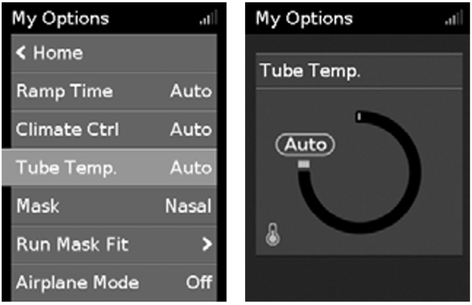
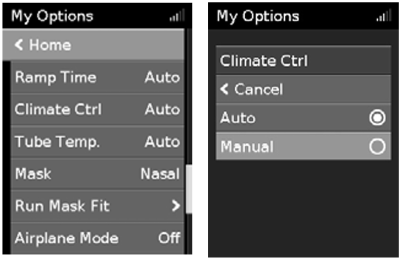
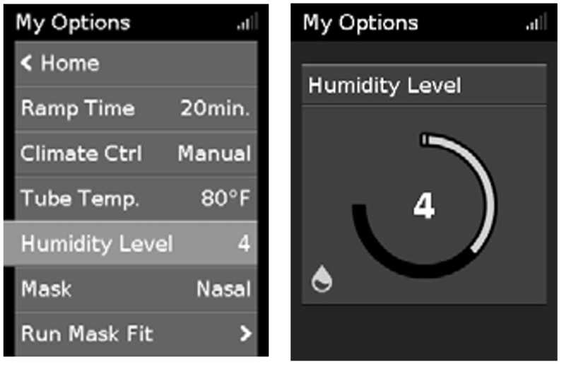
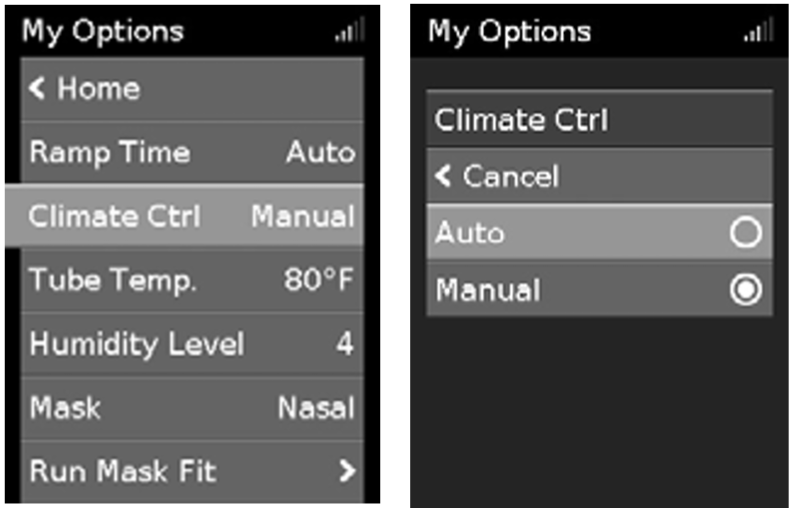

Climate Control is an intelligent system that controls the humidifier and the ClimateLineAir heated air tubing to deliver constant, comfortable temperature and humidity levels during therapy. Designed to prevent dryness of the nose and mouth, it maintains the set temperature and relative humidity while you sleep.
Climate Control can be set to either Auto or Manual and is only available when both the ClimateLineAir and the HumidAir humidifier are attached.
Climate Control Auto is the recommended and default setting. Climate Control Auto is designed to make therapy as easy as possible, so there is no need to change the temperature or humidity settings. The Tube Temperature is set to Auto (80°F [27°C]) and Climate Control adjusts the humidifier output to maintain a constant, comfortable humidity level of 85% relative humidity while protecting against rainout (water droplets in the air tubing and mask).
In Climate Control Auto there is no need to change any settings, but if the air in the mask feels too warm or cold you can adjust the tube temperature to find what is most comfortable for you. You can set the Tube Temperature to anywhere between 60–86°F (16–30°C), or turn it off completely.

Designed to offer you more flexibility and control over your settings, Climate Control Manual lets you adjust the temperature and humidity to the setting which is most comfortable for you. In Climate Control Manual, the tube temperature and the humidity level can be set independently however, rainout protection is not guaranteed. If rainout does occur, first try increasing the tube temperature. If the air temperature becomes too warm and rainout continues, try decreasing the humidity.

The humidifier moistens the air and is designed to make therapy more comfortable. If you are getting a dry nose or mouth, turn up the humidity. If you are getting any moisture in your mask, turn down the humidity. You can set the Humidity Level to Off or between 1 and 8, where 1 is the lowest humidity setting and 8 is the highest humidity setting.

If you have been using Climate Control Manual and want to return to Climate Control Auto, follow the instructions below.
